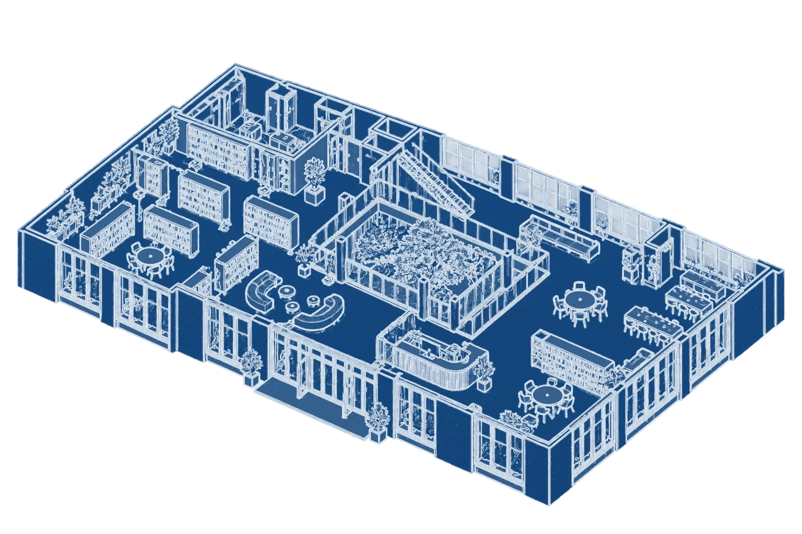
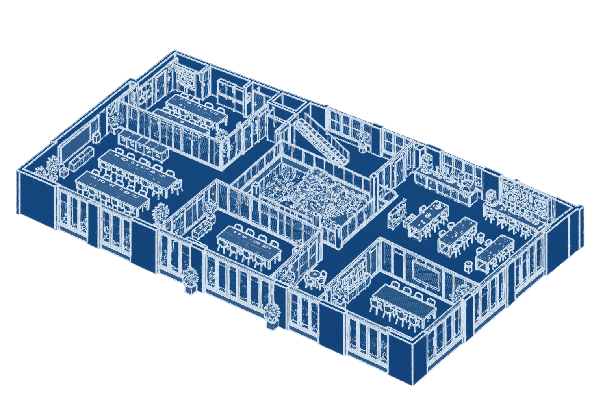
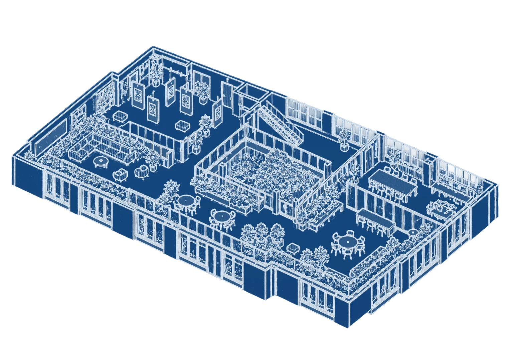
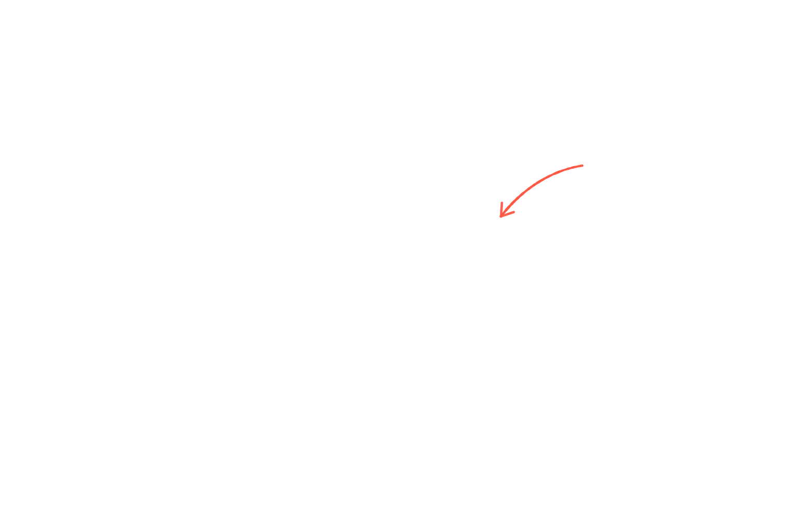

ARCHITECTURE OF LEARNING / THREE LEVELS
세 층을 아래에서 위로 엽니다
- 01 / 1F배움의 문도서 · 안내 · 라운지LIBRARY
- 02 / 2F함께 짓는 교실모둠 · 프로젝트 · 제작STUDIO
- 03 / 3F연결의 층지역 · 온라인 · 발표CONNECT
- ALL중정세 층이 함께 내려다보는 빈 마당OPEN TO ALL
ALL01 / 1F02 / 2F03 / 3F
SPATIAL STUDY — 001 / LEVEL 1
배움의 문을 열다
책과 사람을 만나는 열린 도서 공간.
누구나 머무는 라운지에서 배움이 시작된다.
01 LIBRARY / RECEPTION / COMMONS
ALL01 / 1F02 / 2F03 / 3F
REFERENCE / LIFE-STAGE MATRIX
빌려 온 본문 #114 생애 단계 열 체계도 · 내용은 다른 가상 예시
ALL01 / 1F02 / 2F03 / 3F
SPATIAL STUDY — 001 / LEVEL 2
함께 짓는 교실
벽을 옮기면 모둠이 되고, 모으면 강당이 된다.
만들고 고치는 일이 수업 안에 들어온다.
02 STUDIO / MAKER / FLEX ROOM
ALL01 / 1F02 / 2F03 / 3F
SPATIAL STUDY — 001 / LEVEL 3
세 층이 중정으로 이어진다
가운데 비운 마당을 모든 층이 내려다본다.
지역과 함께 쓰는 공간도 이 층에 둔다.
03 CONNECT / COURTYARD / OPEN TO ALL

ALL01 / 1F02 / 2F03 / 3F
DIMENSIONS / CONCEPT
교실 밖 공간을 세 배로 넓힙니다
교실이 차지하는 면적 · 지금
함께 쓰는 공간 · 지금 10%에서
중정 · 세 층이 함께
면적은 설계용 가정값(가상 예시)
ALL01 / 1F02 / 2F03 / 3F
REFERENCE / CONCENTRIC DIAGRAM
빌려 온 본문 #57 예산 각도 동심원 체계도 · 내용은 다른 가상 예시
ALL01 / 1F02 / 2F03 / 3F
DESIGN PRINCIPLES
설계의 원칙은 셋입니다
- P—01열어 둔다문과 벽보다 창과 마당을 먼저 그린다OPEN
- P—02옮길 수 있다벽 · 가구는 수업에 맞춰 바뀐다FLEX
- P—03함께 쓴다방과 후에는 지역에 연다OPEN TO ALL
ALL01 / 1F02 / 2F03 / 3F
배움의 공간을
다시 설계하다
ARCHITECTURE OF LEARNING
모든 기관 · 수치는 가상 예시
ALL01 / 1F02 / 2F03 / 3F